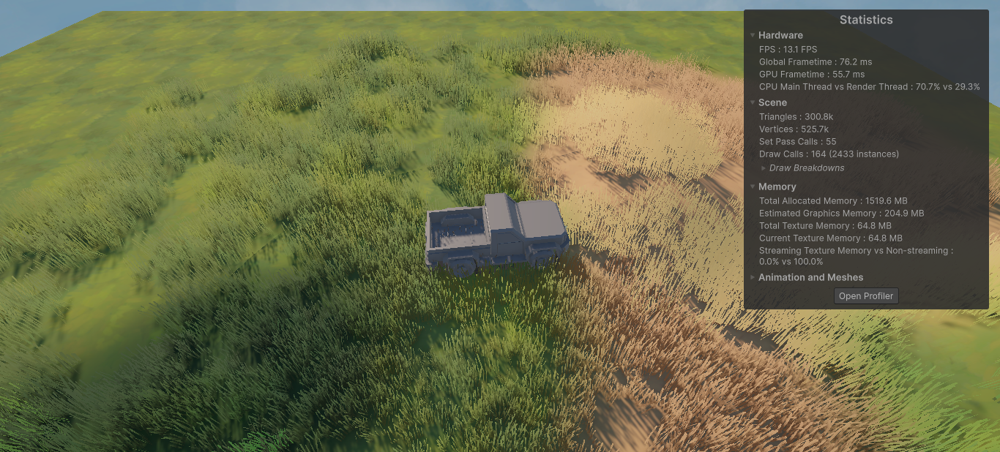
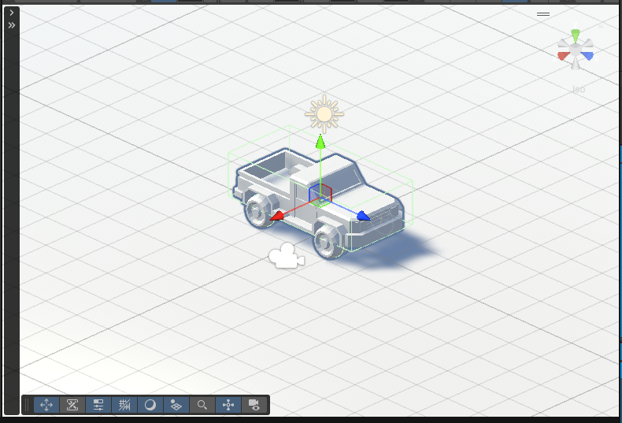
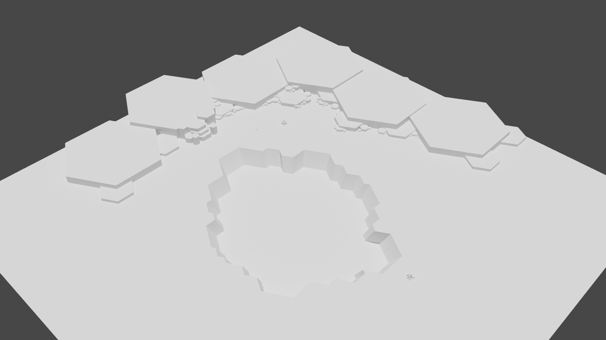

Devlog #1
July 2026

Where It All Started
I've always wanted to build a game that feels relaxing to play. Instead of racing against a timer or fighting enemies, I wanted players to enjoy driving through peaceful landscapes while delivering packages to small cabins and villages. A theme inspired from bruno simons portfolio
Check out bruno simons portfolioThat simple idea became the starting point for my newest Unity project. The goal isn't to make the biggest game—it's to make something that feels cozy, rewarding, and enjoyable to explore.

Building the Prototype
The first challenge was getting the driving mechanics to feel right. I experimented with Unity's Wheel Colliders, camera movement, and suspension until the vehicle started behaving naturally. yes followed a lot of tutorial for this one. and gpt helped me a lot.
Although the visuals are still very simple and sluggish right now , being able to drive around my own environment was a huge milestone and made the project feel real for the first time.

Creating the World
For the environment, I'm aiming for a stylized low-poly look inspired by some of my favorite indie games. Rather than focusing on realism, I'm trying to create a world that's colorful, peaceful, and fun to explore. mainly trying to texture paint most of the stuff.
I'm currently experimenting with terrain generation, custom trees, grass, lighting, and different weather conditions to give each area its own atmosphere and making contentes in blender.
What's Next?
I REALLY NEED TO FINISH MODELING
I'll continue posting updates here as development progresses. Thanks for reading!